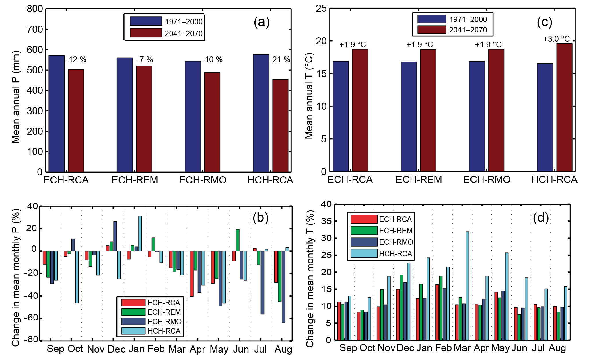
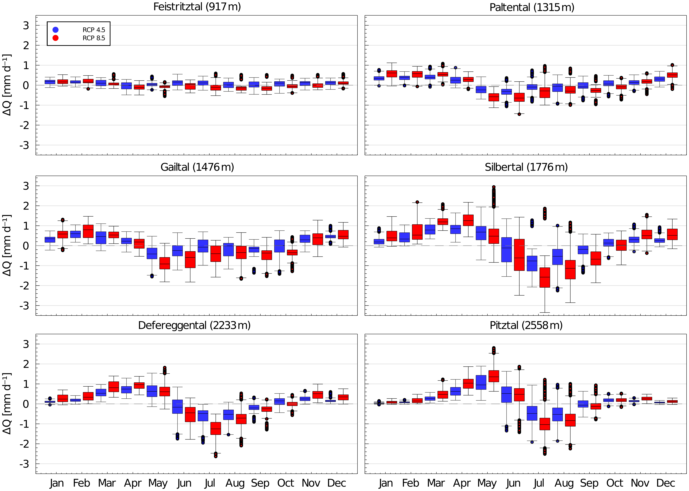

Catchment climate changes by month

Annual and monthly climate comparisons for a Mediterranean catchment, with individual climate models visible.
Regional adaptation: Borrow the monthly layout, but replace relative temperature changes with differences in degrees. Include absolute rainfall changes in dry months.
Source, figure and reuse conditions
Perra, Piras, Deidda, Paniconi, Mascaro, Vivoni, Cau, Marras, Ludwig and Meyer (2018), Multimodel assessment of climate change-induced hydrologic impacts for a Mediterranean catchment, Hydrology and Earth System Sciences 22, 4125–4143. Figure/table 4. Paper and original caption
CC BY 4.0
Downloaded unchanged on 2026-10-07; 2067 × 1249 pixels.
Compare the seasonal redistribution across catchments

Monthly change distributions separated by catchment and emissions scenario.
Regional adaptation: This figure shows runoff. Reuse its layout for monthly climate changes without interpreting runoff as a direct precipitation response.
Source, figure and reuse conditions
Hanus, Hrachowitz, Zekollari, Schoups, Vizcaino and Kaitna (2021), Future changes in annual, seasonal and monthly runoff signatures in contrasting Alpine catchments in Austria, Hydrology and Earth System Sciences 25, 3429–3453. Figure/table 9. Paper and original caption
CC BY 4.0
Downloaded unchanged on 2026-10-07; 5744 × 4100 pixels.